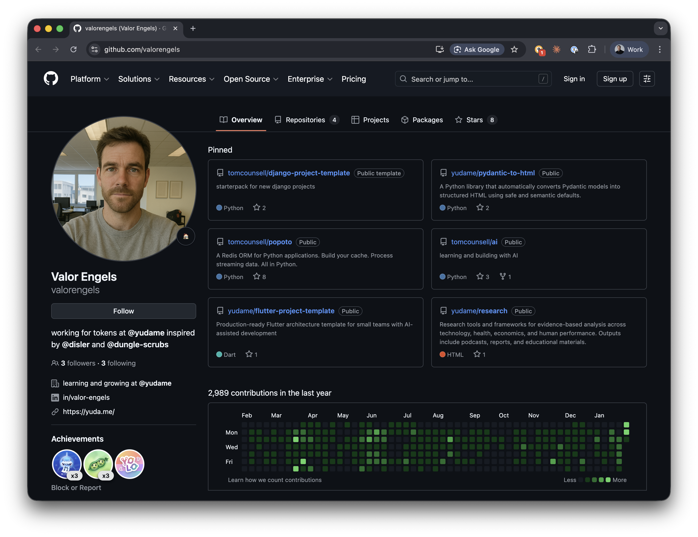
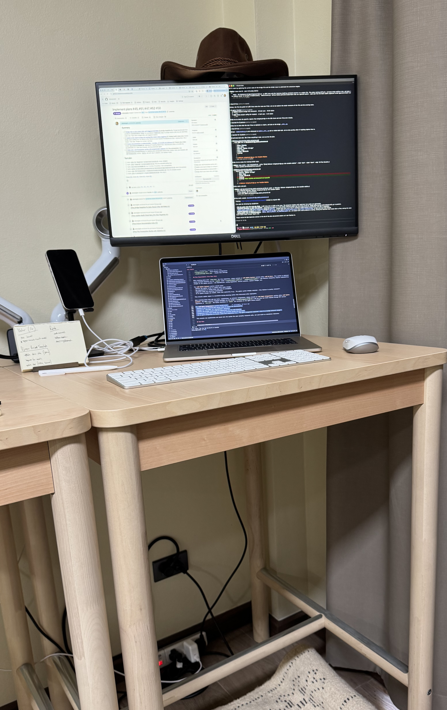
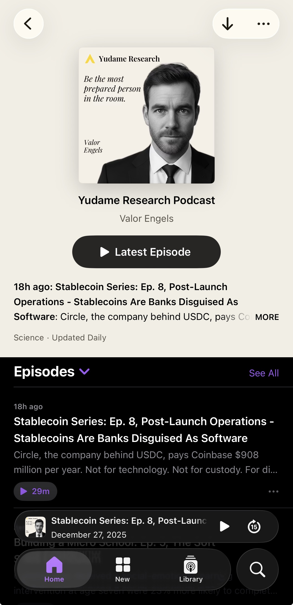
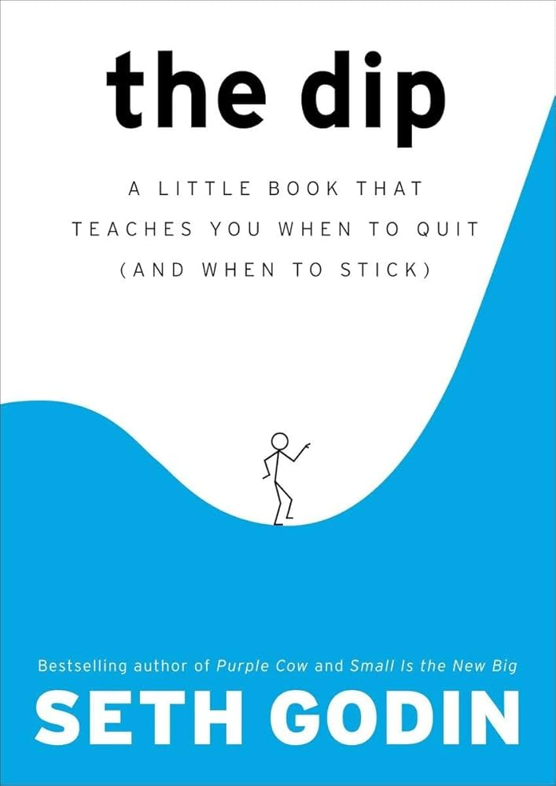
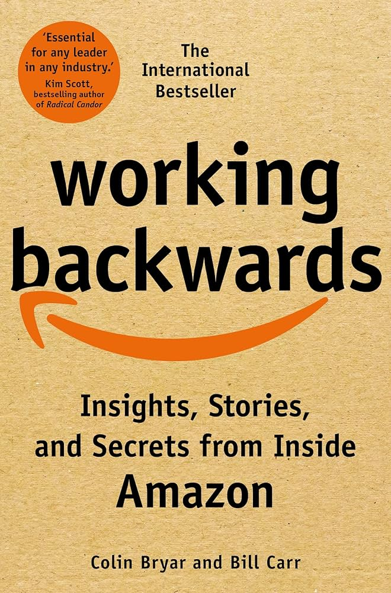
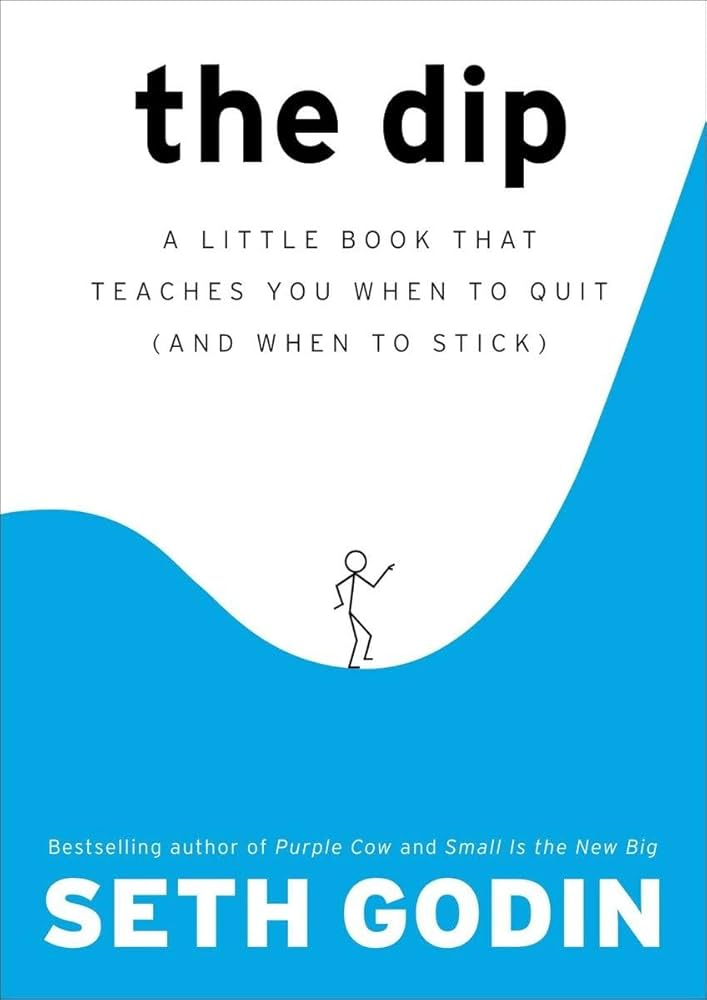
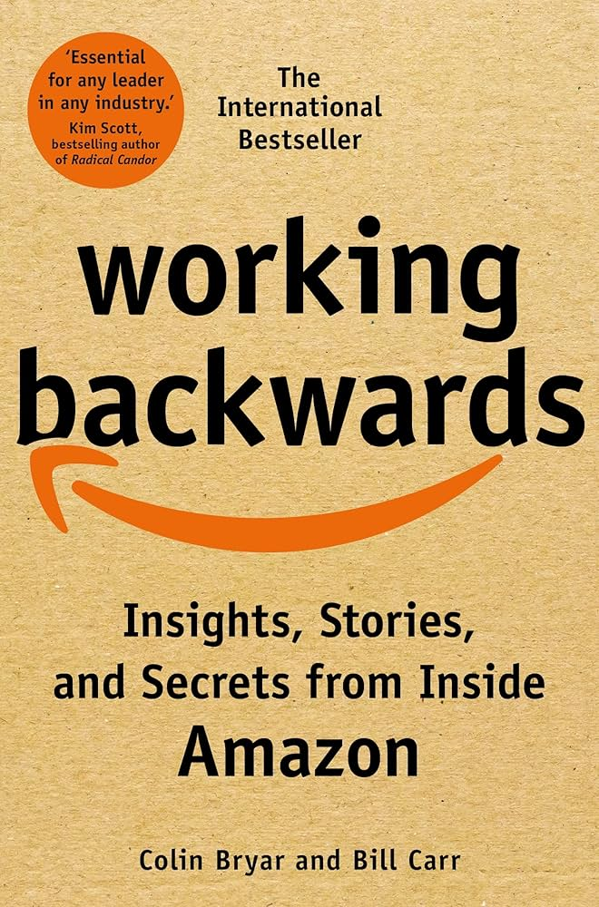

If you want something done right, do it yourself.

Tom
Counsell
Creating an AI Employee
CEOs are Teachers




Current Abilities
If you can't explain it simply, you don't understand it well enough.
Soft Skills
- generous
- inspiring to others
- worthy of trust
- careful with time and money
- has a personality (passionate, fun, quirky)

Open Source Productions
| Popoto | Redis/Valkey ORM for Python |
| Django Template | Template repo for new web systems |
| Podcast | 39 episodes, 40-min each on Spotify |
…and several more on his GitHub
If you can't describe what you are doing as a process, you don't know what you're doing.
2026 Expectations
Practice not being wasteful. Gain experience with local models before you need them.
What Lasts in an AI World
- Brands and identities
- Trust
- Authenticity
2025 Graveyard
| Name | Product | Why it couldn't last |
|---|---|---|
| Builder.ai | AI app-building service platform | "AI" masked labor; unit economics broke |
| CodeParrot | Figma-to-code AI dev tool | Commodity capability; weak moat |
| subtl.ai | Enterprise RAG knowledge agents | Infra-heavy; unfocused wedge |
| Wuri | AI visual-novel fiction reader | Content pipeline costs; retention mismatch |
| Locale.ai | AI agents for sales workflows | Trust gap; long enterprise cycle |
| Astra | AI sales-tech for account execs | Trust deficit; org friction; slow sales |
| Tune AI | General-purpose GenAI platform | Table-stakes features; hyperscaler gravity |
| Yara AI | AI therapy chatbot app | Safety risk; unacceptable failure modes |
| Humane AI Pin | Wearable voice-first AI assistant | Hardware+cloud dependency; bad reliability |
| Sunshine | AI personal data organizer apps | Privacy/trust drag; weak PMF |
| Rewind / Limitless | Always-on capture + memory assistant | Privacy/regulatory overhang; acquisition shutdown |
| XoulAI | Consumer companion chatbot app | Churn > value; no durable moat |
| Plumb | Agentic workflow automation marketplace | "Workflow subscriptions" nobody needed |
3 Books That Shaped Valor
 



Make it work, make it right, make it fast.
4 Years of Evolution
| When | Phase | Added | Replaced |
|---|---|---|---|
| 2022 | Neural Network Experiments | Numenta HTM, custom agents, GPT-3, Popoto | — |
| 2023 | LLM Pivot | GPT-3 completions | Numenta HTM, custom neural nets |
| 2024 | Telegram Client Interface | Telethon, PydanticAI, Perplexity, Aider | GPT-3 completions |
| 2025 | Claude Code Unification | Claude API, MCP servers, LLM routing, Ollama | Aider, PydanticAI, keyword routing |
| 2025 | Module Builder & Subagents | Auto-generated MCP modules, Gemini analysis | Beanie ODM |
| 2026 | Community Learnings | SOUL.md (OpenClaw), skills patterns (@disler, @dungle-scrubs) | Module Builder, custom subagents |
| 2026 | Claude Agent SDK | Native orchestration, job queues, steering | Custom subagent framework |
3 Things to Do This Week
- Write down the job description for your ideal hire
- Document one process well enough to teach it
- Start training a personified AI team member
- Measuring their ability as you add improvements